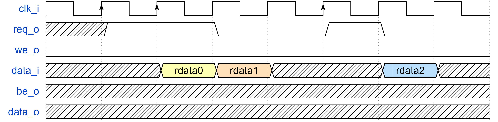
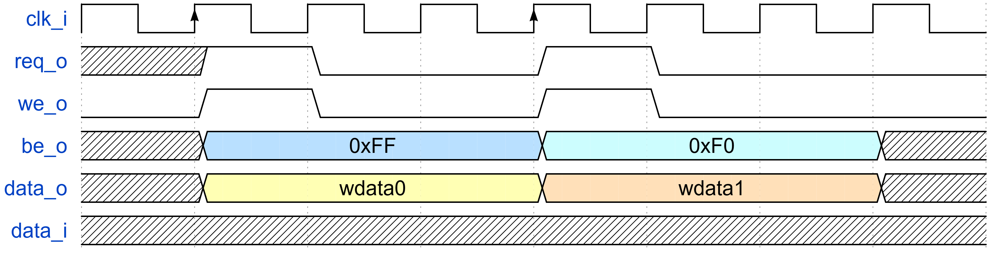

1. 数字系统 SoC 的集成和行为级仿真
完成 RTL 设计后需要进行行为级仿真，以验证设计的功能是否符合预期。 在将设计的模块集成到 SoC 之后，也需要对整个 SoC 进行仿真，通过 CPU 指令的方式验证整个 SoC 的功能。 我们使用 synopsys 的 VCS 工具进行仿真、Verdi 工具查看波形文件。
TLDR
- 模板文件路径：
/work/home/limingxuan/common/SOC_CVA6/ - 仿真脚本：
/work/home/limingxuan/common/SOC_CVA6/Makefile - 仿真命令：
b make verdi
1.1 模板文件
我们使用开源 CPU CVA6 以及 AXI 总线构成的 SoC 作为行为级仿真模板示例，其文件夹路径为：
该文件夹的结构为：
SOC_CVA6
├── src
│ ├── cpu_cva6
│ │ ├── ...
│ │ └── cva6.sv # CVA6 Top Module
│ ├── soc_axi
│ │ ├── ...
│ │ ├── axi_bus
│ │ │ ├── ...
│ │ │ └── axi_dw_converter.sv # AXI Data Width Converter
│ │ ├── reg_bus
│ │ │ ├── ...
│ │ │ └── reg_intf.sv # Reg Bus Interface
│ │ ├── bus_converter
│ │ │ ├── ...
│ │ │ ├── axi_to_reg.sv # AXI to Reg Bus Converter
│ │ │ └── axi2mem.sv # AXI to Memory Interface
│ │ └── bootrom.sv # Boot ROM
│ ├── sram # Compiler Generated SRAM
│ │ ├── sram128x46
│ │ │ ├── sram128x46.v # SRAM Module
│ │ │ └── ...
│ │ ├── sram128x128
│ │ │ ├── sram128x128.v # SRAM Module
│ │ │ └── ...
│ │ └── ...
│ ├── misc
│ │ ├── ...
│ │ └── tc_sram.sv # Behavioral SRAM
│ ├── soc_pkg.sv # Address Mapping Definition
│ ├── soc.sv # SoC Top Module
│ └── filelist.f # Filelist for RTL
├── sim
│ ├── soc_tb.sv # SoC Testbench
│ ├── init_mem.hex # Memory Initialization File
│ ├── soc_signal.rc # Verdi Signal Configuration
│ └── Makefile # Simulation Script
├── Makefile # Top-level Makefile
├── ...
... # Other Folders/Files
1.2 子模块集成
总线接口
服务器上的 SoC 使用 AXI 总线，因此我们需要在子模块和 AXI 总线之间添加适配器（adapter），以实现子模块与 AXI 总线的通信。 有两种常见的适配方式：
- AXI to Reg Bus Converter：将 AXI 总线转换为寄存器总线，适用于控制、指令寄存器。
- AXI to Memory Converter：将 AXI 总线转换为内存接口，适用于子模块缓存（local buffer）。
AXI to Reg Bus Converter
该适配器适用于需要将少量寄存器映射到 AXI 总线的场景，例如控制寄存器、状态寄存器等。
你需要调用的模块为：
src/soc_axi/reg_bus/reg_intf.sv：寄存器总线接口定义。src/soc_axi/axi_bus/include/axi_intf.sv：AXI 总线接口定义。src/soc_axi/bus_converter/axi_to_reg.sv：AXI 到寄存器总线转换器。
如果 AXI 总线的数据位宽和寄存器总线的数据位宽不一致，你还需要调用：
src/soc_axi/bus_converter/axi_dw_converter.sv：AXI 数据位宽转换器。
接下来，你需要理解寄存器总线接口、阅读 src/soc_axi/include/reg_*.svh 并自行编写寄存器与寄存器总线之间的逻辑，如下是一个简单的例子。
// soc.sv
module soc (
...
);
...
REG_BUS #(
.ADDR_WIDTH(64),
.DATA_WIDTH(64)
) my_reg_bus;
axi_to_reg_intf #(
.ADDR_WIDTH(64),
.DATA_WIDTH(64)
) my_axi_to_reg_intf (
.clk_i,
.rst_ni,
.testmode_i,
.in (master[soc_pkg::REG]),
.reg_out (my_reg_bus)
);
// define reg type
`REG_BUS_TYPEDEF_ALL(my_reg, logic[63:0], logic[63:0], logic[3:0])
my_reg_req_t my_reg_req;
my_reg_rsp_t my_reg_rsp;
// assign REG_BUS.out to (req_t, rsp_t) pair
`REG_BUS_ASSIGN_TO_REQ(my_reg_req, my_reg_bus)
`REG_BUS_ASSIGN_FROM_RSP(my_reg_bus, my_reg_rsp)
my_reg #(
.reg_req_t (my_reg_req_t),
.reg_rsp_t (my_reg_rsp_t)
) my_reg_inst (
.clk_i,
.rst_ni,
.req_i (my_reg_req),
.rsp_o (my_reg_rsp)
);
...
endmodule
module my_reg #(
parameter type reg_req_t = logic,
parameter type reg_rsp_t = logic
) (
input logic clk_i,
input logic rst_ni,
input reg_req_t req_i,
output reg_rsp_t rsp_o
);
logic [63:0] reg0_d, reg0_q, reg1_d, reg1_q;
always_comb begin
rsp_o.ready = 1'b1;
rsp_o.data = 64'b0;
rsp_o.error = 1'b0;
reg0_d = reg0_q;
reg1_d = reg1_q;
if (req_i.valid) begin
unique case (req_i.addr)
0: reg0_d = req_i.wdata;
1: reg1_d = req_i.wdata;
default: rsp_o.error = 1'b1;
endcase
end
else begin
unique case (req_i.addr)
0: rsp_o.rdata = reg0_q;
1: rsp_o.rdata = reg1_q;
default: rsp_o.error = 1'b1;
endcase
end
end
always_ff @(posedge clk_i or negedge rst_ni) begin
if (!rst_ni) begin
reg0_q <= 64'b0;
reg1_q <= 64'b0;
end
else begin
reg0_q <= reg0_d;
reg1_q <= reg1_d;
end
end
endmodule
AXI to Memory Converter
该适配器适用于需要将大量数据映射到 AXI 总线的场景，例如缓存、存储器等。
你需要调用的模块为：
src/soc_axi/axi_bus/include/axi_intf.sv：AXI 总线接口定义。src/soc_axi/bus_converter/axi2mem.sv：AXI 到 memory 接口转换器。
axi2mem 模块 memory 接口的定义如下所示：
| 端口 | 方向 | 描述 |
|---|---|---|
| req_o | output | 读写使能 |
| we_o | output | 写使能 |
| addr_o[ADDR_WIDTH-1:0] | output | 地址，行索引 |
| be_o | output | 写掩码，粒度为 1-byte |
| user_o | output | 用户自定义 |
| data_o[DATA_WIDTH-1:0] | output | 写数据 |
| user_i | input | 用户自定义 |
| data_i[DATA_WIDTH-1] | input | 读数据 |
读操作的时序如下：

写操作的时序如下：

接下来，你需要根据上述端口和时序，自行编写 子模块 memory 接口，如下是一个简单的例子。
// soc.sv
module soc (
...
);
...
logic req;
logic we;
logic [63:0] addr;
logic [7:0] be;
logic [63:0] wdata;
logic [63:0] rdata;
axi2mem #(
.ADDR_WIDTH(64),
.DATA_WIDTH(64)
) my_axi2mem (
.clk_i,
.rst_ni,
.slave (master[soc_pkg::MEM]),
.req_o (req),
.we_o (we),
.addr_o (addr),
.be_o (be),
.data_o (wdata),
.user_o (),
.user_i (64'b0),
.data_i (rdata)
);
YOUR_SUBMODULE your_submodule (
.clk_i,
.rst_ni,
.req_i (req),
.we_i (we),
.addr_i (addr),
.be_i (be),
.data_i (wdata),
.data_o (rdata),
... // other ports
);
...
endmodule
地址映射
CPU 通过地址访问外围设备，因此需要给每个设备分配地址空间，这个过程称为地址映射（memory mapping）。
你需要修改的文件为：
src/soc_axi/soc_pkg.sv：地址映射定义。src/soc_axi/soc.sv：SoC 顶层模块。
在 soc_pkg.sv 中，仿照其他模块的地址分配，你需要定义每个子模块的名称、起始地址、空间大小。
Peripheral 数量
在修改地址映射时，注意 NB_PERIPHERAL 变量的正确性，否则会导致总线接口数目异常。
在 soc.sv 中，你需要在 addr_map 变量中添加你的子模块地址映射，如下所示。
assign addr_map = '{
'{ idx: soc_pkg::Debug, start_addr: soc_pkg::DebugBase, end_addr: soc_pkg::DebugBase + soc_pkg::DebugLength },
'{ idx: soc_pkg::ROM, start_addr: soc_pkg::ROMBase, end_addr: soc_pkg::ROMBase + soc_pkg::ROMLength },
'{ idx: soc_pkg::CLINT, start_addr: soc_pkg::CLINTBase, end_addr: soc_pkg::CLINTBase + soc_pkg::CLINTLength },
'{ idx: soc_pkg::PLIC, start_addr: soc_pkg::PLICBase, end_addr: soc_pkg::PLICBase + soc_pkg::PLICLength },
'{ idx: soc_pkg::Timer, start_addr: soc_pkg::TimerBase, end_addr: soc_pkg::TimerBase + soc_pkg::TimerLength },
'{ idx: soc_pkg::DCO, start_addr: soc_pkg::DCOBase, end_addr: soc_pkg::DCOBase + soc_pkg::DCOLength },
'{ idx: soc_pkg::CIM, start_addr: soc_pkg::CIMBase, end_addr: soc_pkg::CIMBase + soc_pkg::CIMLength },
'{ idx: soc_pkg::SRAM, start_addr: soc_pkg::SRAMBase, end_addr: soc_pkg::SRAMBase + soc_pkg::SRAMLength }
};
1.3 系统行为级仿真
添加源文件
在 src/filelist.f 中添加你的子模块源文件。
初始化内存
CPU 的程序存储在主存中，因此需要在仿真开始前初始化内存。
我们提供如下的 Python 脚本，用于将反汇编文件 *.d 转化为内存初始化文件 init_mem.hex。
import re
import os
class Dis2Hex:
def __init__(self, input_file, output_file):
self.input_file = input_file
self.output_file = output_file
def dis2hex(self):
input_file = self.input_file
output_file = "temp.hex"
pattern = re.compile(r"\s+([0-9a-fA-F]+):\s+([0-9a-fA-F]+)\s+.*$")
with open(input_file, "r") as fin, open(output_file, "w") as fout:
for line in fin:
match = pattern.match(line)
if match:
address = match.group(1)
data = match.group(2)
fout.write(data + "\n")
def reshape(self):
input_file = "temp.hex"
output_file = "init_mem.hex"
with open(input_file, "r") as fin, open(output_file, "w") as fout:
lines = fin.readlines()
for i in range(0, len(lines), 2):
hex_num1 = lines[i].strip()
hex_num2 = lines[i+1].strip() if i+1 < len(lines) else "00000000"
merged_line = hex_num2 + hex_num1
fout.write(merged_line + "\n")
input_file = "test_code.d"
output_file = "init_mem.hex"
print("Reading disassembly file:", input_file)
print("Output hex file :", output_file)
dis2hex = Dis2Hex(input_file, output_file)
dis2hex.dis2hex()
dis2hex.reshape()
os.remove("temp.hex")
编译
由于服务器上没有 RISC-V 编译链，因此你需要在本地编译代码。 如果你不会编译，可以参考 12. C 代码编译。
编写 testbench
在 sim/soc_tb.sv 中编写 testbench。
对于系统仿真来说，testbench 只需要提供时钟、复位信号以及仿真时长。
如果你只想仿真子模块，在 testbench 中实例化需要仿真的子模块即可。
运行仿真
在 SOC_CVA6 主目录下运行如下指令即可完成 RTL 编译以及查看生成波形文件。
如果你不想使用 Verdi 查看波形文件，可以使用如下指令。
运行仿真时，脚本会创建 sim/build/ 文件夹，所有运行仿真生成的文件都会放在这个文件夹中。
build 文件夹
请不要在 build 文件夹中保存任何文件！
每一次逻辑综合都会清空该文件夹。
在 Verdi 中，点击波形区域，使用快捷键 r 可以恢复波形，加载 sim/soc_signal.rc 文件可以查看 CPU 指令波形。
Top Module 选择
该模板也可用于其他模块仿真，只需要将你的模块和 testbench 都加入 filelist.f，执行 b make TOP=<your testbench top module name> 即可。
Makefile 内容
非常建议你阅读 Makefile 脚本，以便更好地理解仿真的过程。